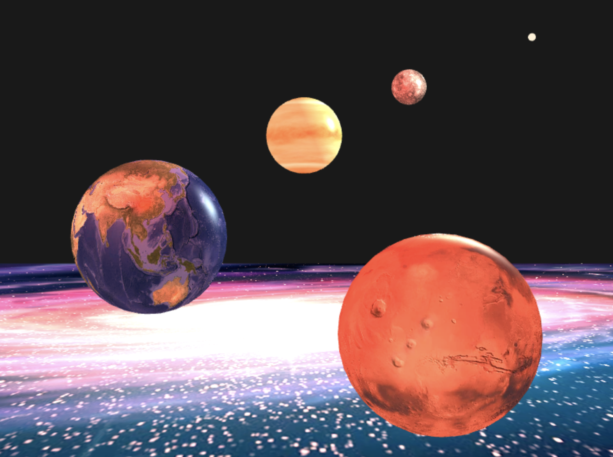

Description
Using HTML WebGL2 API to demonstrate how mulitple point-light sources illuminate 3D models in world space. This project implements texture mapping to each model by applying some pictures on them. It also allows the users to adjust the properties of each point light and see how they work in different shaders (gouraud vs. phong)
Live Demo Source CodeSample Code for Phong Shading
#version 300 es
precision mediump float;
in vec3 frag_pos;
in vec3 frag_normal;
in vec2 frag_texcoord;
uniform vec3 light_ambient;
uniform vec3 light_position[10];
uniform vec3 light_color[10];
uniform vec3 camera_position;
uniform vec3 material_color; // Ka and Kd
uniform vec3 material_specular; // Ks
uniform float material_shininess; // n
uniform sampler2D image; // use in conjunction with Ka and Kd
out vec4 FragColor;
void main() {
vec3 total_light = vec3(0);
vec3 texcolor = vec3(texture(image, frag_texcoord));
vec3 N = normalize(frag_normal);
for (int i = 0; i < 10; i++) {
vec3 L = normalize(light_position[i] - frag_pos); // Light direction
// Ambient
vec3 ambient = light_ambient * material_color;
// Diffuse
vec3 diffuse = light_ambient * material_color * max(dot(N,L), 0.0);
// Specular
vec3 reflection_light = normalize(2.0 * max(dot(N, L), 0.0) * N - L);
vec3 view_direction = normalize (camera_position - frag_pos);
vec3 specular = light_ambient * material_specular * pow (max(dot(reflection_light, view_direction), 0.0), material_shininess);
vec3 intensity = (ambient + diffuse) * texcolor + specular;
total_light += light_color[i] * intensity;
}
FragColor = vec4(total_light, 1.0);
}